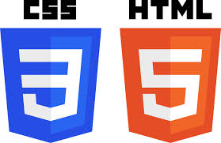

Hier finden Sie einen kleinen Teil meiner bisherigen Computer-Projekte. Der Großteil dieser Projekte ist aus privatem Interesse entstanden. Alle hier vorgestellten Projekte wurden von mir alleine geschrieben.
Java
Java ist eine Objektorientierte Programmiersprache. Ich programmiere seit 3/4 Jahren mit Java und habe in dieser Zeit bereits viele
Programme geschrieben und auch 2 Ferialpraktika an der Alpen Adira Universität Klagenfurt absolviert.
Vorweg ist zu sagen, dass ich bei keinem dieser Projekte externe Bibliotheken verwendet habe. Der komplette Code ist
von mir alleine geschrieben bzw. aus den standard Java-Bibliotheken importiert.

HTML/CSS
"HTML (Hypertext Markup Language) ist eine textbasierte Auszeichnungssprache zur Strukturierung digitaler Dokumente." HTML-Dokumente sind die Grundlage des World Wide Web.
"CSS (Cascading Style Sheets) ist eine Stylesheet-Sprache für elektronische Dokumente." Mit CSS werden Gestaltungsanweisungen für HTML erstellt.
